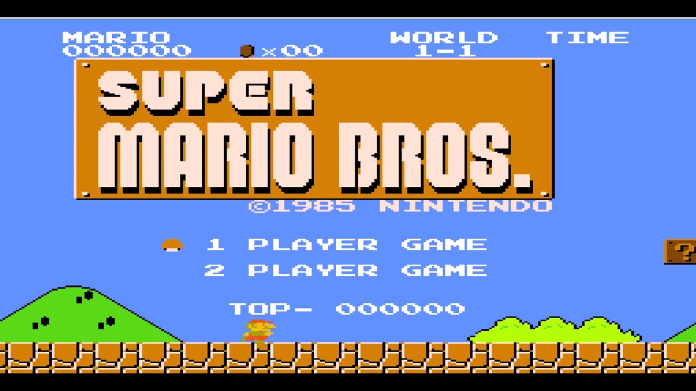

1980s-1990s
Arcade games were a thriving business in the early 1980s. In 1981, the arcade video game business in the United States alone generated $5 billion in sales, and the number of arcades quadrupled between 1980 and 1982. The impact of video games on society spread to other mediums including blockbuster films and music.
AN ICON BASED ON PIZZA
In 1981, Pac-Man was released in arcades. One of the objectives of its creator was to make a game that appealed to women. At the time, most arcade machines were based off of war and appealed more to men. The creators made the theme instead about eating and made the character, based off of a pizza missing a slice, cute.
FROM POPEYE TO DONKEY KONG
Nintendo was a company that for lack of a better word, had an identity crisis. It went through many phases of different types of products, from card games to restaurants. They eventually found success in the games and arcade market. Early in the 1980s, they released the handheld system known as the Game and Watch, which For their next project, they originally planned for game based off of the character Popeye. However, the team was unable to secure the rights. As a result, they created their own characters for the game. The game involves Donkey Kong kidnapping the beautiful Pauline. The main protagonist they named Jumpman must climb the obstacles Donkey Kong throws at him in order to save the girl and lock the gorilla back up. The arcade game was a huge success and put Nintendo's name on the map. They would follow those releases with Donkey Kong Jr. in 1982, Mario Bros. (starring the same Jumpman from Donkey Kong, now named Mario alongside his brother Luigi) in 1983, and Punch-Out in 1984/p>
CRASH OF ‘83
Several computer and console companies had gone bankrupt (Atari reported a $536 million loss in 1983. Some industry insiders and investors lost faith in the overall market of video games, believing it to be a transitory fad. E.T. The Extra-Terrestrial, based off of the 1982 Steven Speilburg feature film, was a game that was such a critical and financial flop that remaining unsold cartridges were buried in the deserts of New Mexico.
HOME COMPUTERS
While the console market was crashing and burning, the home computers market was thriving even more during this era. The Commodore 64 is an 8-bit home computer released by Commodore International in January 1982. It was initially demonstrated at the Consumer Electronics Show in Las Vegas on January 7–10, 1982. The C64 could provide stronger images and audio than systems without such bespoke hardware, thanks to support for multicolor sprites and a custom chip for waveform creation.
Sinclair Research created the ZX Spectrum, an 8-bit personal computer. It was initially introduced in the United Kingdom on April 23, 1982, and quickly became the best-selling microcomputer in the country.The Spectrum was available in eight distinct variants, ranging from the entry-level 16 KB RAM model introduced in 1982 to the ZX Spectrum +3 model released in 1987 with 128 KB RAM and a built-in floppy disk drive. All these new devices coming to fruition motivated people to develop their own games from home. All these new devices coming to fruition motivated people to develop their own games from home
UNIVERSAL VS NINTENDO
In 1984, Universal sued Nintendo for copyright infringement. They claimed that the character and game Donkey Kong was a rip-off of the character of King Kong, which Universal claimed to owned the rights to. However, Nintendo's counsel John Kirby argued that Universal had no right threatening the small Japanese development company as King Kong was in the public domain with Universal holding no right to sue Nintendo. The verdict was a victory for Nintendo, making them more confident in being able to compete with larger American companies. Fun fact: the Nintendo character by the name of Kirby is rumored to be based off of the same John Kirby that turned the tide of the case.
NINTENDO STRIKES

The Nintendo Entertainment System was just about ready to be sold to the public, but how would they get the attention of an audience that had turned their back on video games since 1983’s video game crash. The answer was a toy Robot dubbed the Robotic Operating Buddy (R.O.B.) in America. This along with other peripherals like the Nintendo Zapper that was compatible with games like Duck Hunt gave the impression to consumers that Nintendo’s products weren’t games but toys. These games plus the release of Super Mario Bros., starring the same character from the previous Nintendo games Donkey Kong and Mario Bros. made the Nintendo Entertainment System a commerical success. Nintendo would follow up this success with games such as Legend of Zelda, Metroid, and Ice Climber. Other third-party developers such as Capcom and Squaresoft also found success on the NES with games such as Mega Man and Final Fantasy.